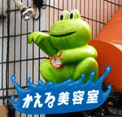
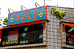
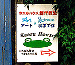

夏はカエルカットで！全国初のカエル美容室！  【東京発=Hongo同志記者】東京都立川市より、ご案内いたします。なぜかすぐ近くに「かえる美容室」なんてのも出来てしまい、立川カエルタウン化か！？などと勝手にニヤニヤしております。かえる美容室の所在地は、東京都立川市富士見町です。
【全国かえる奉賛会】素晴らしい美容室があるものだ。このごろスーパー美容師とかが話題になっているが、そのうちに、全国カエル美容室カエルカット選手権とかもできるであろう。さー、この夏、彼氏を夢中にさせたい人や、新たな恋愛に挑戦する人々は、イマスグに、カエル美容室に電話で予約しれよう！！
美容室そばに「カエルハウス創作教室」も！ 【東京発=Hongo同志記者】私の事務所は旧米軍ハウス一戸建てを使っていますが、「カエルハウス」と名付けております。そして９９年４月より、予てから準備していた塾、「カエルハウス創作教室」をオープン！！偶然にもカエル美容室のそばです。子供たちも印象に残りやすく、親しんでくれております。（とりあえず今の生徒は小学１年生が３名のみ。。。）カエルハウスは新たにホームページを準備中。カエルハウス創作教室は今、夏季講習など企んでいるところです。【全国かえる奉賛会】いいなー。カエルは想像力を刺激するからなー。創作教室にはぴったりだ。さー全国の子を持つ親は、学習塾や学校をやめさせて、さっそく、カエルハウス創作教室にわが子を連れて行こう！ 「カエルの質問箱」連載へ！【東京発=近藤KAERU同志記者】新連載で「カエルの質問箱」というのをはじめることになりました。雑誌はウィンドウズ系の初級者向けグラフィック雑誌「WinGraphc」7月23日発売号から連載スタートです。イラストも自分で書いて、原稿も自分で書いて、編集も自分でやりました。特製オリジナルグッズも自分でつくろうと思っています。だって、カエルなんだもーん（笑）。内容は、読者のグラフィックな質問にカエルと編集者A（わたしです）がカケアイで答えるというもの。今回は第1回で、「ノートパソコンでグラフィックできるの？」といったかんじです。 モロー銅像各種を販売へ！【福岡かえる展事務局】モロー君の手作り銅像を販売するぞーっ！モローの父・寺井師が、入魂の手作業で増産しているので、数には限りがある。福岡かえる展公式ページに詳細をお知らせするので待っていてくれい。 |
かえる古新聞過去に取り上げた記事を見出し付きで一覧したい人は、ここをクリック◆創刊号を見る◆先週号を見る◆話題の号を見る◆かえる新聞の昔を読む
|
私も入っています。。全国かえる奉賛会
大王様に会うには、このバナーをクリック。ずっと奥に写真館があるぞ。全国かえる奉賛会に入会するには、自分のホームページのどこかに、下の部分を追加するとバナーがリンク付きで表示されるぞ。どんどん入会しましょー |


|